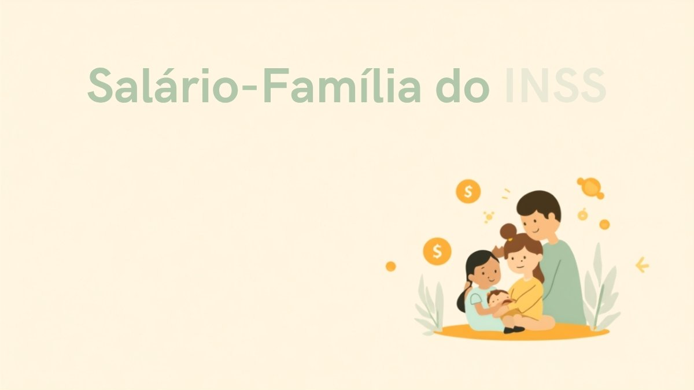

Salário-família do INSS: quem tem direito, valor da cota e como pedir em 2026

Diferente do que muita gente pensa, o salário-família não é um programa social separado — é um benefício pago junto com o salário ou a aposentadoria de quem tem filhos pequenos e ganha até um determinado valor por mês. É um dos benefícios do INSS menos conhecidos, justamente porque o valor da cota é baixo e passa despercebido no contracheque. Mas para quem se enquadra, ele é cumulativo por dependente e some do bolso quando deixa de ser pedido ou renovado corretamente.
Neste guia você vai entender exatamente quem tem direito ao salário-família em 2026, qual é o valor da cota, o limite de renda vigente, quais documentos precisam ser renovados todos os anos para não perder o benefício e como fazer o pedido — seja pelo empregador, pelo sindicato ou diretamente no Meu INSS.
O que é o salário-família e quem tem direito
O salário-família é um valor pago por dependente a segurados do INSS de baixa renda, como forma de ajudar no sustento de filhos pequenos. Ele é pago junto com o salário (no caso de quem está trabalhando) ou junto com o benefício (no caso de aposentados e quem recebe auxílio por incapacidade), sem precisar de pedido separado todo mês — só a comprovação inicial e as renovações anuais.
Segundo o INSS, têm direito ao salário-família:
- Empregados com carteira assinada (CLT), incluindo os trabalhadores temporários;
- Empregados domésticos — direito garantido desde 2015, pela Lei Complementar 150;
- Trabalhadores avulsos (os que prestam serviço a várias empresas por meio de sindicato ou órgão gestor de mão de obra, como no caso dos portuários);
- Aposentados por invalidez;
- Aposentados por idade (65 anos para homens e 60 para mulheres, com a idade reduzida em 5 anos para quem se aposentou como trabalhador rural);
- Segurados em gozo de auxílio-doença/auxílio por incapacidade temporária.
Não têm direito ao salário-família: contribuintes individuais (autônomos que recolhem por conta própria), segurados facultativos, microempreendedores individuais (MEI) e empregadores. A lógica é a mesma que explica por que o MEI não tem direito a diversos benefícios pagos pelo regime geral nos mesmos moldes do empregado CLT — a contribuição do MEI ao INSS é simplificada e não cobre esse benefício. Servidores públicos estatutários também ficam de fora, porque seguem regime próprio de previdência, com regras específicas de cada ente.
Valor da cota e limite de renda em 2026
Os valores do salário-família são reajustados todos os anos junto com o salário mínimo e o teto do INSS. Em 2026, pela Portaria Interministerial MPS/MF nº 13, de 9 de janeiro de 2026, os números vigentes são:
| Item | Valor em 2026 |
|---|---|
| Cota do salário-família (por dependente) | R$ 67,54 |
| Limite de remuneração mensal para ter direito | até R$ 1.980,38 |
Isso significa que quem ganha até R$ 1.980,38 por mês e tem, por exemplo, dois filhos dentro da idade recebe R$ 135,08 a mais no contracheque (2 x R$ 67,54), pagos junto com o salário. Quem ultrapassa esse teto de remuneração perde o direito ao benefício por completo — não existe uma faixa intermediária ou proporcional por causa da renda.
Nos meses de admissão e demissão, a cota é paga de forma proporcional aos dias efetivamente trabalhados naquele mês, e não em valor cheio.
Quais dependentes dão direito à cota
Geram direito à cota do salário-família:
- Filhos, enteados ou menores tutelados até 14 anos incompletos;
- Filhos ou equiparados inválidos, de qualquer idade, desde que a invalidez seja comprovada por perícia médica do INSS.
Cada dependente dentro dessas condições gera uma cota — não há limite no número de filhos que podem ser somados, desde que cada um seja comprovado individualmente.
Regra prática: o salário-família não é automático. Mesmo comprovando a condição uma vez, é preciso renovar a documentação nos prazos certos todos os anos — quem não renova tem o pagamento suspenso, mesmo continuando dentro dos requisitos.
Documentos exigidos e os prazos que não podem ser perdidos
No primeiro pedido, é preciso apresentar documento de identificação com foto e CPF, a certidão de nascimento de cada dependente e, quando aplicável, o termo de responsabilidade. A partir daí, o INSS exige comprovações periódicas conforme a idade da criança:
- Até 6 anos: carteira de vacinação (ou documento equivalente), apresentada uma vez por ano, em novembro;
- De 7 a 14 anos: comprovante de frequência escolar, apresentado duas vezes por ano, em maio e novembro.
Se a documentação não for entregue nesses prazos, o pagamento da cota é suspenso até a regularização — e não é raro que o trabalhador só perceba a falta no contracheque meses depois. Vale colocar um lembrete na agenda para maio e novembro, especialmente se você tem filho em idade escolar.
Como pedir o salário-família
O caminho para solicitar depende da sua situação:
- Empregados CLT e domésticos: o pedido é feito diretamente com o empregador, que registra a informação no eSocial — não é preciso ir ao INSS;
- Trabalhadores avulsos: o requerimento é feito ao sindicato da categoria ou ao órgão gestor de mão de obra;
- Aposentados por invalidez ou por idade, e quem recebe auxílio-doença: o pedido é feito diretamente ao INSS, pelo aplicativo ou site Meu INSS (com conta gov.br) ou pela Central 135.
Assim como no auxílio-doença, quem já recebe outro benefício do INSS costuma conseguir incluir o salário-família diretamente pelo Meu INSS, sem precisar de agendamento presencial. Para quem está prestes a se aposentar, vale conferir também como funciona o cálculo da aposentadoria e se o seu caso mantém o direito ao salário-família depois da concessão do benefício.
Salário-família x BPC/LOAS: não confunda
É comum confundir o salário-família com o BPC/LOAS, mas são benefícios bem diferentes. O BPC paga um salário mínimo integral a idosos de baixa renda ou pessoas com deficiência que comprovem não ter meios de se sustentar, e não exige contribuição prévia ao INSS. Já o salário-família é uma cota pequena, paga a quem já contribui (ou já é segurado) e tem filhos dentro do critério de idade — os dois benefícios têm público, regras e valores completamente distintos, e não substituem um ao outro.
Perguntas rápidas
MEI tem direito ao salário-família?
Não. A contribuição simplificada do MEI ao INSS não dá direito ao salário-família, mesmo que ele tenha filhos dentro da idade e renda baixa.
Trabalhador rural aposentado tem direito?
Sim. Quem se aposentou por idade como trabalhador rural tem direito ao salário-família, com a vantagem de a idade mínima de aposentadoria já ser reduzida em 5 anos em relação à regra urbana.
Quem recebe pensão por morte tem direito?
O INSS lista como elegíveis os segurados na ativa, os aposentados por invalidez ou idade e quem recebe auxílio-doença — a pensão por morte não aparece nessa lista oficial. Se você recebe pensão e tem dependentes dentro da idade, confirme diretamente no Meu INSS ou pela Central 135 se o seu caso específico dá direito, já que a análise considera o histórico de cada segurado.
Posso receber salário-família de mais de um emprego?
Sim, desde que a soma das remunerações de cada vínculo, separadamente, respeite o limite de renda — o cálculo é feito por vínculo empregatício, não pela soma total dos rendimentos.
Perdi o prazo de novembro. Posso regularizar depois?
Sim, é possível regularizar apresentando a documentação em atraso, mas o benefício fica suspenso enquanto isso não for feito — e os valores do período de suspensão não costumam ser pagos retroativamente sem que a empresa ou o INSS analise o caso.
Quer entender outros benefícios pagos pelo INSS junto com o salário ou a aposentadoria? Veja também nosso guia sobre o auxílio-doença e sobre como calcular a aposentadoria em 2026.